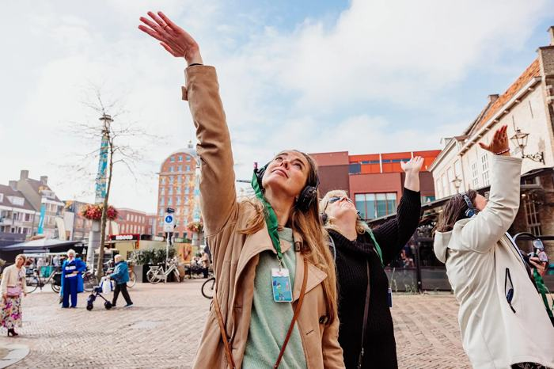

Silent Noodshow
Koptelefoon op, keycord om, en een stem die je in een kwartier door een overstroming praat.
wat er gebeurt
Een stem in de koptelefoon praat de groep door een overstroming. Er zijn vier groepen, elk met een eigen keycordkleur; zo herkennen ze elkaar als buren. Iedereen krijgt een kaartje met een straat en de waterdiepte daar. Het verhaal vertakt voor wie wel of geen noodpakket en evacuatieplan heeft. Zo leer je snel wie er om je heen al voorbereid is en hoe je dat kunt doen.
jij regelt
Een straat of plein en een stroompunt.
wat het oplevert
Rondes van een kwartier, de hele middag door. Helpt het bewustzijn over waterveiligheid en evacuatieplannen vergroten. Ook als dagopening binnen te boeken.
voor: gemeente · veiligheidsregio · buurt of organisatie